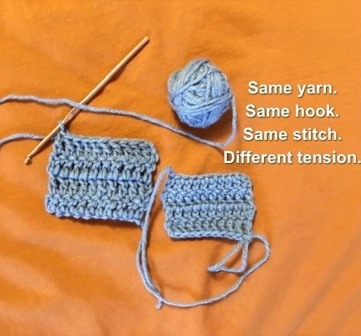
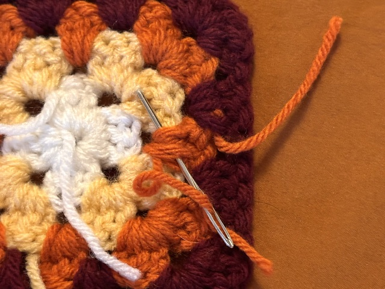
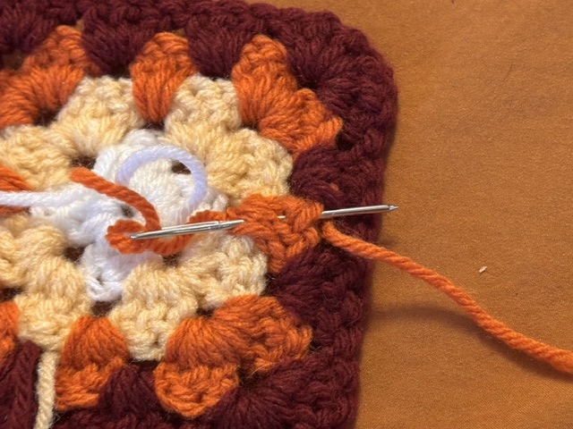

How to hold a hook
You can truly hold a hook in whatever way is most comfortable for you, but I have found the best method to be holding the hook between my middle finger and thumb, resting my pointer finger on top to help with guidance.
Tension
Tension refers to how tight you are making your stitches. Higher tension means that your stitches are tighter together and will appear smaller. Finding the right tension can be difficult and what works best may change from project to project. What I have found to work best in standardizing my tension is the way that I hold my yarn. I lightly curl my pinky and ring fingers around the yarn, then weave it above my middle and pointer fingers to be able to be able to hold my project steady between my pointer finger and thumb.

Slip knot
Most projects start with a slip knot. To make a slip knot, cross the end of your yarn over itself to form a loop, grab the long end of yarn from inside the loop, and pull up on the long end to form a slip knot!
Yarning over
Yarning over is a term used in every crochet stitch! Yarning over is the process of getting the yarn around the hook in the correct direction. To yarn over, twist your crochet hook towards your body, down, and away from your body so that the yarn is now twisted around your hook.
Finishing projects


When crocheting, you cannot just cut off the end of your yarn and call your project complete, or your project will be at risk of unraveling! Instead, you should cut your yarn while on the hook to leave a tail of a couple inches. Then, you can pull up on the hook until the yarn is pulled through. Then, you should do what is called weaving in the ends, which is pretty much what it sounds like. Using a darning needle, sew the end of the yarn back through the project about three times. The goal is to essentially knot up the yarn so much on the inside that it won't dislodge and unravel, so weaving in multiple openings and directions will set you up for the best results. After weaving in the ends, then you can cut off the ends to not be visible.
Many crochet projects will appear very stiff when they are first completed. Stitches may not be perfectly even, resulting in wonky lines or shapes. To make projects less stiff, you can wash or steam the project–being conscientious of how extreme heat may harm your yarn. To shape the project, you can do what is called blocking. Blocking a project involves wetting the project and "blocking" it into shape, typically done by pinning it onto some sort of foam board. When it dries, the stitches should remember the shape that the project was blocked into.